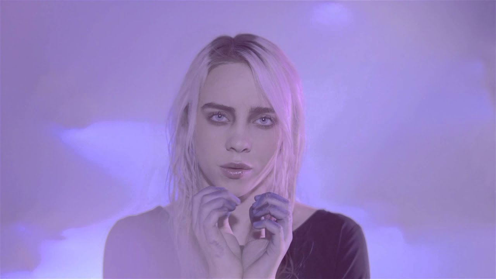

Њена каријера креће 2015. године када снима своју прву песму "Ocean Eyes".
Песму су објавили на SoundCloud-у. Добили су велике похвале и промоције разних медијских кућа и маркетинга.
Братов менаџер је помогао да потпише свој први уговор. Повезао је са људима из света моде који су помогли да се обликује њен имиџ.
Након тога, објављује неколико верзија и ремикса ове песме и постиже сјајне резултате.
Звук њених песама уклапа се у жанр „SteamBait“, меланхолични поп под утицајем певачице Лане Дел Реј.
У међувремену направила је два албума "When We All Fall Asleep, Where Do We Go?" и "Happier Than Ever" који су постигли веома добре резултате.
Клик на слику води вас на спот песме "Ocean Eyes" 